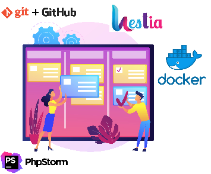
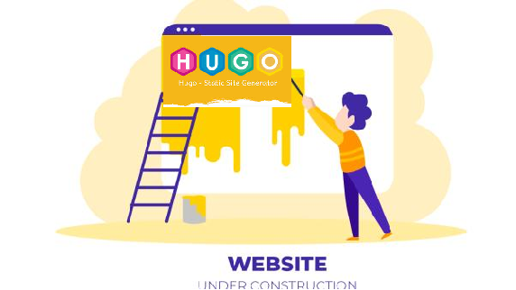
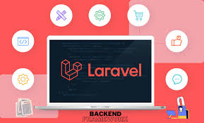
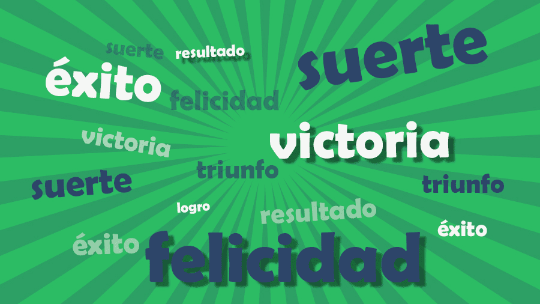

🌐 💻 🕸️
Desarrollo Web en Entorno Servidor
📽️
Presentación
~ profesor @ManuelRomero ~
Proyecto conjunto
- Este es un proyecto de grupo
- Rol de profesor, rol de alumno
- Todos un mismo objetivo
- Este módulo es una parte de un todo
Material
Bibliografía que iremos completando entre todos
⬇️

Google Maps

Javascript

MongoDB
MySQL – MariaDB
PHP
Webinars, podcasts and live coding
Gestionar librerías y dependencias
Phpunit
El ciclo se basa en un real decreto Real Decreto del Título: 686/2010, de 20 de mayo (BOE 12/06/2010) Este decreto está actualizado a 2023: Real Decreto de actualización del Título: 405/2023, de 29 de mayo (BOE 3 de junio) El currículo es la adaptación de ese decreto Orden del Currículo: ORDEN de 8 de julio de 2011 (BOA 28/07/2011). Código del módulo: 0613 Denominación: Desarrollo de aplicaciones web en entorno servidor Horas totales: 189 (establecidas en currículo) (Horas previstas para este curso 186) Horas semanales: 9 horas semanales Pérdida de la evaluación continua: 29 horas (15% horas currículo)📚 🖊️
Datos Legales sobre el módulo
Real Decreto
Curriculo
El módulo
Establece 4 unidades formativas 0613. Desarrollo Web en entorno servidor. Veremos todas, no en este orden, de forma continua  Tema 0 Presentación Motivación
Tema 1
Tema 2 Arquitecturas y tecnologías web
Tema 3 Docker y git: comandos básicos para el desarrollo web Instalación del sistema y puesta en marcha Hestia como hosting de sitios web Construcción de sitios web estáticos con Hugo
 PHP Lenguaje al lado del servidor
Tema 4. Sintaxis del lenguaje Tema 5. Usando Formularios Tema 7. Usando arrays Tema 6. Ficheros: contenidos y gestión de ficheros en el servidor Tema 8. Autentificación, Sesiones y Cookies Tema 9. PHP Orientado a objetos Bases de datos con php y utilidades
Tema 10. Bases de datos con PHP: mysqli y PDO. Tema 11. Composer y autocarga con PSR-4 y classmap Laravel como framework de php
 Tema 12. Usando Laravel: instalación y funcionamiento Tema 13. Rutas, vistas y controladores Tema 14. Modelo: Eloquent Tema 13. Servicios web y uso de APIS: REST Y SOAP y GraphGL Tema 15. Autentificación y seguridad Laravel como framework de php
Tema 16. Bases de datos NoSQL: MongoDB Tema 17. Pruebas unitarias Tema 18. Websocket Tema 19. Búsqueda de información en la web📚 🖊️
Temario
Según BOA
Bloque introducción
Bloque 2
Bloque 3


Bloque 4
📝 📖 📝 📖
Motivación en el módulo

> Compartamos ideas y sensibilidades.
> Un punto de partida común
Situación actual
> Estudiado primero de DAW o DAM
> Sabemos programar en java u otro lenguaje Orientado a Objetos
> Nos gusta la programación
> Creo que me gusta mucho el desarrollo web
¿Y ahora qué?
¿Qué cambiará?
Vamos a seguir programando, pero con algunos cambios
¿Aprendiendo PHP?
PHP es la tecnología que vamos a usar (hay que usar una…)
No es la mejor, ni la peor. Es la más madura que hay.
Pero vamos a aprender a desarrollar aplicaciones en el servidor
Aprendiendo PHP
Seguiremos implementando algoritmos (eso siempre)
Va a cambiar en entorno en el cual van a correr las aplicaciones
Va a ser en un entorno cliente/servidor
Va a cambiar el lenguaje de programación y un poco su paradigma.
Lenguaje interpretado
de tipado dinámico (como python)
fuertemente orientados a las expresiones PHP
Nuestro trabajo va a ser una parte de un todo.
Dependemos de muchos elementos:
* Necesitamos la programación del cliente,
* Necesitamos la página dónde embeber nuestro código,
* Necesitmos la red,
* Necesitamos el protocolo http para transferir nuestras aplicaciones,
datos y el resultado de nuestro código,
Necesitamos un servidor web que residirá en un hosting,
El código normalmente se ejecutará en una máquina
diferente en la que estamos desarrollando,
y esto despista un poco.
Siempre en un servicio dedicado: El servidor Web
Va a cambiar el entorno
en el cual vamos a desarrollar las aplicaciones
Cómo lo vamos a hacer
Muy importante, entender lo qué se hace
Aspectos a reflexionar
Entender las cosas y dedicarle un tiempo para asimilarlas.
Todas las que estáis aquí sois inteligentes.
La inteligencia es una característica de las personas.
No todas las personas aprendemos de la misma forma,
pero sí que tenemos la facultad de aprender.
Lo que sí que me ha demostrado la experiencia es que
A PROGRAMAR SE APRENDE PROGRAMANDO.
No es algo que se estudie, se practica.
No hay prisa y el avance está asegurado si en el camino
damos pasos seguros.
Entender las cosas y dedicarle un tiempo para asimilarlas.
Todas las que estáis aquí sois inteligentes.
La inteligencia es una característica de las personas.
No todas las personas aprendemos de la misma forma,
pero sí que tenemos la facultad de aprender.
Lo que sí que me ha demostrado la experiencia es que
A PROGRAMAR SE APRENDE PROGRAMANDO.
No es algo que se estudie, se practica.
No hay prisa y el avance está asegurado si en el camino
damos pasos seguros.
Aspectos a reflexionar
Este temario está pensado para que las empresas os abran las puertas cuando lleguéis a ella.
Está pensado para aprender a aprender ….No debe de haber pausa para llegar a alcanzar nuestro objetivo.
Ver todo el temario no es el objetivo principal.
El objetivo es aprender disfrutando (y sufriendo un poco je je …).
Como profesor, he de decir que mi pretensión es daros el pistoletazo de salida,
sois vosotros los que en vuestra carrera profesional
habréis de llegar lejos,
Mi misión no es estar en una meta,
es encaminaros a vosotras para que lleguéis a ella.
Sobre el curso
Cada tema va a tener un soporte documental que intentará aclarar los contenidos Ese soporte se usará para explicar las clases presenciales.
Cada tema tendrá ejemplos y prácticas para poder asimilar los contenidos
Cada tema intentará tener una práctica o trabajo que debéis entregar/presentar/defender para evaluaros
Lets Go!!!!